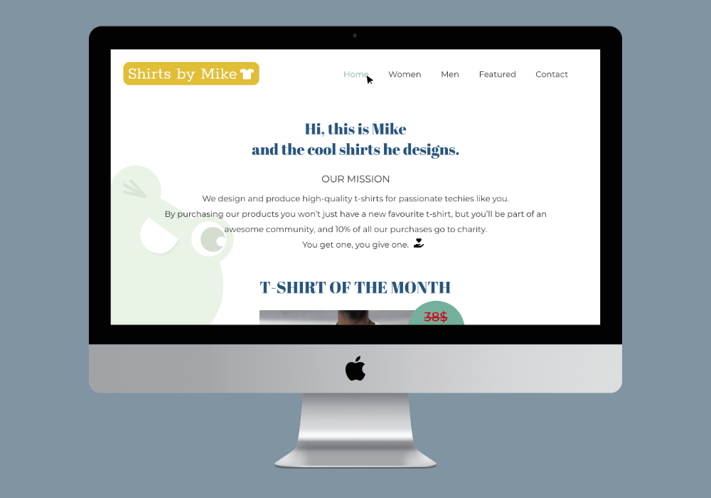
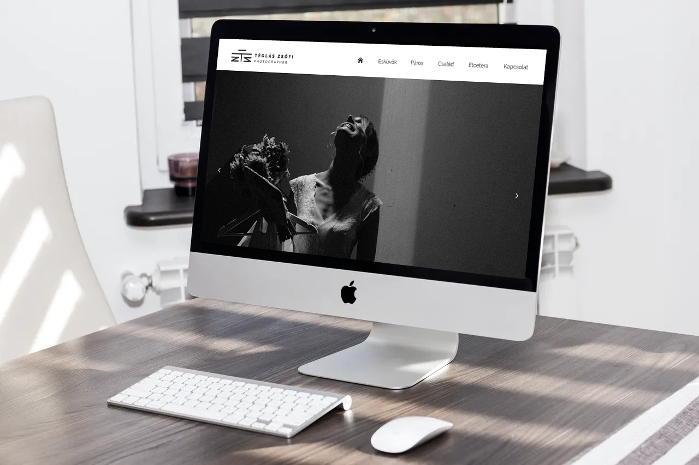

Projects
Most of my previous work includes web design and logo design where I worked with following tools:
- Sketch
- XD
- Illustrator
- HTML
- CSS
1.
During my UX Techdegree I created the redesign of a website and logo for an online t-shirt store.This project was a challenge, and fun at the same time.

2.
Another project which is close to my heart is a website for a talented photographer.At this stage of the project I am almost finished with the webdesign, and I will bring the site alive with code.
